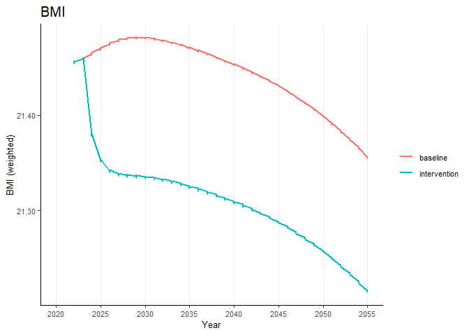
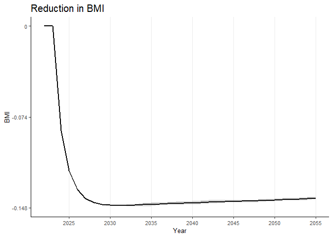
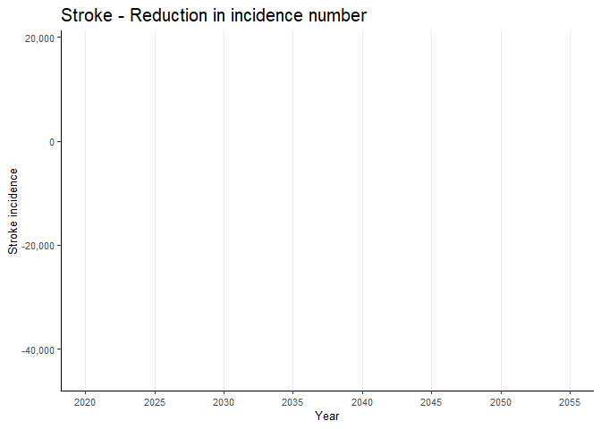
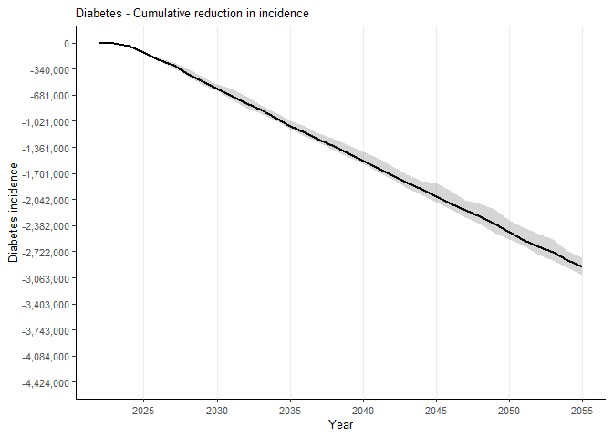
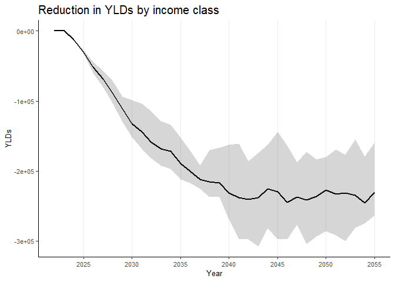

The goal of healthgpsrvis is to plot and visualise data related to Health-GPS.
Getting Started
Prerequisites
- RStudio installed
Installation
You can install the development version of healthgpsrvis from GitHub with:
# install.packages("devtools")
devtools::install_github("imperialCHEPI/healthgpsrvis")
# devtools::install_github("imperialCHEPI/healthgpsrvis", ref = "branch-name")Example
This is an example to create the weighted data using the package:
library(healthgpsrvis)
# Get the path to the .rds file included in the testdata folder
filepath <- testthat::test_path("testdata", "data_ps3_reformulation")
#filepath <- "path/to/data.rds" # Get the path to the .rds file included in any other local folder
# Read the .rds file
data <- readRDS(filepath)
# Generate the weighted data
data_weighted <- gen_data_weighted(data)
#> [1] "Loading the config file..."
#> [1] "Processing the data..."
#> [1] "Data processing complete."
# Generate the weighted data for the risk factors
data_weighted_rf_wide_collapse <- gen_data_weighted_rf(data_weighted)
#> [1] "Loading the config file..."
#> [1] "Processing the data..."
#> [1] "Data processing complete."
# View structure of the weighted data for the risk factors
str(data_weighted_rf_wide_collapse)
#> tibble [34 × 13] (S3: tbl_df/tbl/data.frame)
#> $ time : int [1:34] 2022 2023 2024 2025 2026 2027 2028 2029 2030 2031 ...
#> $ diff_sodium_mean : num [1:34] 0 0 -33.7 -33.7 -33.6 ...
#> $ diff_sodium_min : num [1:34] 0 0 -33.7 -33.7 -33.7 ...
#> $ diff_sodium_max : num [1:34] 0 0 -33.7 -33.6 -33.5 ...
#> $ diff_ei_mean : num [1:34] 0 0 -23.1 -23.1 -23.1 ...
#> $ diff_ei_min : num [1:34] 0 0 -23.2 -23.2 -23.2 ...
#> $ diff_ei_max : num [1:34] 0 0 -23.1 -23.1 -23.1 ...
#> $ diff_bmi_mean : num [1:34] 0 0 -0.0852 -0.1178 -0.133 ...
#> $ diff_bmi_min : num [1:34] 0 0 -0.0852 -0.1178 -0.1333 ...
#> $ diff_bmi_max : num [1:34] 0 0 -0.0852 -0.1177 -0.1328 ...
#> $ diff_obesity_mean: num [1:34] 0 0 -0.00258 -0.00363 -0.00419 ...
#> $ diff_obesity_min : num [1:34] 0 0 -0.0026 -0.00365 -0.00422 ...
#> $ diff_obesity_max : num [1:34] 0 0 -0.00256 -0.00362 -0.00416 ...To plot a risk factor (say, “bmi”) for the weighted data, you can use the following code:
# Plot the risk factor "bmi"
riskfactors("bmi", data_weighted)
To plot the difference in the risk factor (say, “bmi”) for the weighted data, you can use the following code:
# Plot of difference in the risk factor "bmi"
riskfactors_diff("bmi",
data_weighted_rf_wide_collapse,
scale_y_continuous_limits = c(-0.148, 0),
scale_y_continuous_breaks = c(-0.148, -0.074, 0),
scale_y_continuous_labels = c(-0.148, -0.074, 0))
#> Warning: Use of `data_weighted_rf_wide_collapse$time` is discouraged.
#> ℹ Use `time` instead.
#> Use of `data_weighted_rf_wide_collapse$time` is discouraged.
#> ℹ Use `time` instead.
To plot the incidence difference for, say, “stroke”, you can use the following code:
data_weighted_ds_wide_diff <- gen_data_weighted_ds_diff(data_weighted)
#> [1] "Loading the config file..."
#> [1] "Processing the data..."
#> [1] "Data processing complete."
inc_diff("stroke", data_weighted_ds_wide_diff)
#> Warning: Removed 170 rows containing missing values or values outside the scale range
#> (`geom_line()`).
To plot the cumulative incidence difference for, say, “diabetes”, you can use the following code:
data_weighted_ds_wide_collapse <- gen_data_weighted_ds_cumdiff(data_weighted)
#> [1] "Loading the config file..."
#> [1] "Processing the data..."
#> [1] "Data processing complete."
inc_cum("diabetes",
data_weighted_ds_wide_collapse,
scale_y_continuous_limits = c(-4424000, 0),
scale_y_continuous_breaks = c(-4424000, -4084000, -3743000, -3403000, -3063000, -2722000, -2382000, -2042000, -1701000, -1361000, -1021000, -681000, -340000, 0),
scale_y_continuous_labels = scales::comma(c(-4424000, -4084000, -3743000, -3403000, -3063000, -2722000, -2382000, -2042000, -1701000, -1361000, -1021000, -681000, -340000, 0))
)
#> Warning: Use of `data_weighted_ds_wide_collapse$time` is discouraged.
#> ℹ Use `time` instead.
#> Use of `data_weighted_ds_wide_collapse$time` is discouraged.
#> ℹ Use `time` instead.
To plot burden of disease for, say, “yld”, you can use the following code:
data_weighted_bd_wide_collapse <- gen_data_weighted_burden(data_weighted)
#> [1] "Loading the config file..."
#> [1] "Processing the data..."
#> [1] "Data processing complete."
burden_disease("yld", data_weighted_bd_wide_collapse)
#> Warning: Use of `data_weighted_bd_wide_collapse$time` is discouraged.
#> ℹ Use `time` instead.
#> Use of `data_weighted_bd_wide_collapse$time` is discouraged.
#> ℹ Use `time` instead.